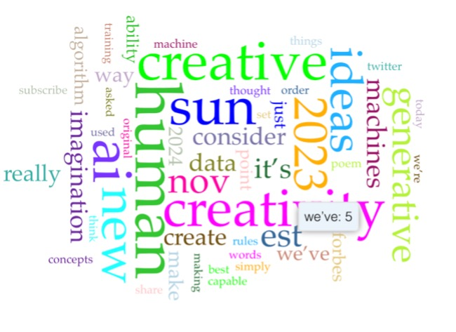
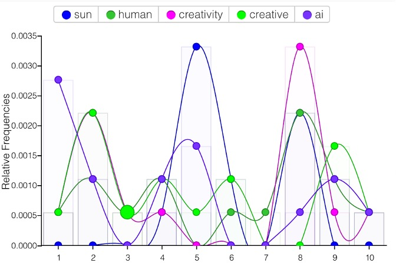
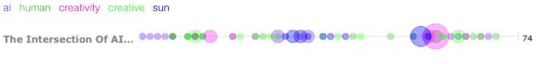
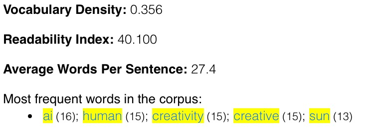

AI tools and their impact on creative media projects - MAD WEEK 5
MAD(A) Week 5 page - Writing Characterisitcs
The 14 professional writing characteristics:
Evaluating resource: https://www.forbes.com/sites/bernardmarr/2023/03/27/the-intersection-of-ai-and-human-creativity-can-machines-really-be-creative
1: Accuracy -
The writing within the page is accurate and uses studies and case examples to back up its points when proposing arguments.
2: Active Voice -
Active voice, not used excessively.
3: Limit Biases -
Not apparent biases as the text is attempting to remain neutral throughout.
4: Clarity -
jargon and technical terminology are defined throughout by the author to make sure all readers can clearly understand the topic.
5: Concisenss -
Maybe too much text in this article and not enough interactive features such as videos and images.
6: Conversational and smoothly flowing prose -
Mostly plain language used, contractions used, as well as conjunctions used to set the tone of the article.
7: Correctness -
Grammar throughout seems correct with a few contractions in the text.
8: Parallelism -
Used in the text to deliver the tone correctly and convey important points.
9: Positive Voice -
yes, as it discusses the different opportunities of AI.
10: Positive Voice -
Strong nouns and verbs – majority of sentences.
11: Sentence Variety -
Strong nouns and verbs – majority of sentences.
12: SImple Words -
Yes to improve clarity to a multitude of readers.
13: Shorter Paragraphs -
Yes to improve clarity to a multitude of readers.
14: Tone and Voice -
The tone and voice for this website intends to be fairly formal as it presents different sets of information to the user and allows them to make an informed decision about the topic.
Voyant tools - key insights
Key insights from my chosen webpage: https://www.forbes.com/sites/bernardmarr/2023/03/27/the-intersection-of-ai-and-human-creativity-can-machines-really-be-creative/
High frequency words used:
- Human
- Creativity
- Sun
- AI
Trends:
- AI used frequently in the beginning of the text to add context.
- Gradually creativity and human become more relevant words towards the end of the text.
Voyant info graphics - highligting trends:



Creating Samples of Text:
Based on the insights of the key words opening statement can be created relevant to the topic: As AI becomes more prominent in the media industry it proposes different challenges and advantages to creators. With ChatGPT being one of the most used AI platforms being used by a variety of creatives and in a professional context.
This webpage aims to discuss the following aspects:
Looking at the relationship between humans and creative AI. This essay aims be an expository essay, remain neutral and primarily be Informative.